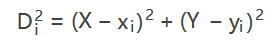

CCF_2020_09 python

来自之前cnblog的博客
源地址：https://www.cnblogs.com/This-is-Y/p/13681884.html
第一题：
题目背景
2020 年 6 月 8 日，国务院联防联控机制发布《关于加快推进新冠病毒核酸检测的实施意见》，提出对“密切接触者”等八类重点人群“应检尽检”，其他人群“愿检尽检”。
题目描述
某市设有n个核酸检测点，编号从1到n，其中i号检测点的位置可以表示为一个平面整数坐标（xi，yi）。为方便预约核酸检测，请根据市民所在位置(X，Y)，查询距其最近的三个检测点。 多个检测点距离相同时，编号较小的视为更近。
输入格式
从标准输入读入数据。
输入共n+1行。
第一行包含用空格分隔的三个整数n、X和Y，表示检测点总数和市民所在位置。
第二行到第n+1行依次输入n个检测点的坐标。第i+1行（1 <= i <= n）包含用空格分隔的两个整数xi和yi表示i号检测点所在位置。
输出格式
输出到标准输出。
输出共三行，按距离从近到远，依次输出距离该市民最近的三个检测点编号。
样例1输入
1 | 3 2 2 |
样例1输出
1 | 1 |
样例2输入
1 | 5 0 1 |
样例2输出
1 | 2 |
样例2解释
子任务
全部的测试点满足，3<= n <= 200,所有坐标均为整数且绝对值不超过1000.
提示
市民到第i号检测点的距离Di,可由如下公式算出：

代码：
1 | 5 2 6 20 40 100 80 |
样例2输入
1 | 1 3 8 0 0 10 10 |
评论